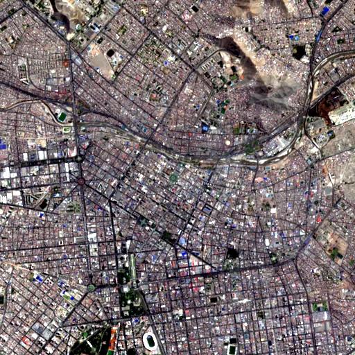

Benchmark / Near-lossless / s2-l1c-10m-4 / s2-l1c-10m-4-09
s2-l1c-10m-4-09
lima · 2023-03-31 · sample details

Metadata
| id | s2-l1c-10m-4-09 |
|---|---|
| source | COPERNICUS/S2 (Sentinel-2 MSI Level-1C) |
| asset | COPERNICUS/S2/20230331T151701_20230331T152433_T18LTM |
| crs | EPSG:32718 |
| transform | 276450.0 10.0 0.0 8670110.0 0.0 -10.0 |
| datetime_start | 2023-03-31T15:26:33.939Z |
| datetime_end | 2023-03-31T15:26:33.939Z |
| bands | B2|B3|B4|B8 |
| shape | 4x512x512 |
| dtype | uint16 |
| unit | DN |
| scale | 1 |
| offset | 0 |
| nodata | 0 |
| input_sha256 | dec0744b10294b3b47a098e04363dc82ea34d7ea7f6ef44fe16230feb6da7f78 |
| site | lima |
| regime | built |
| lon | -77.03 |
| lat | -12.046 |
| spacecraft | Sentinel-2A |
| mgrs_tile | 18LTM |
| processing_baseline | 05.09 |
| radio_add_offset | -1000|-1000|-1000|-1000 |